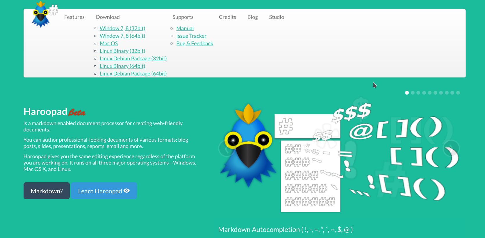
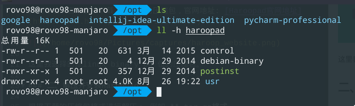
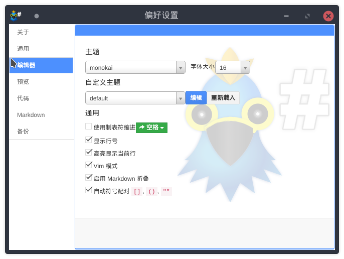

Haroopad 是一个优秀的 Markdown 编辑器，是一个用于创建适宜 Web 的文档的处理器。使用 Haroopad 可以创作各种格式的文档，比如博客文章、幻灯片、演示文稿、报告和电子邮件等。Haroopad 在 Windows、Mac OS X 和 Linux 上均可用。它有 Debian/Ubuntu 的软件包，也有 Windows 和 Mac 的二进制文件。该应用程序使用 node-webkit、CodeMirror，marked，以及 Twitter 的 Bootstrap 。
Haroo 在韩语中的意思是“一天”。
本文主要介绍通过压缩包**.tar.gz的方式安装 Haroopad.
一、下载 Haroopad
我们可以从官网直接下载我们需要的压缩包，官网地址: Haroopad官网地址

这里我选择的是linux binary 64 位的压缩包。
二、解压并安装Haroopad
根据下载的压缩包格式进行解压： 例如 **.tar.gz格式
解压并放到/opt/目录下:
1 | tar zxvf haroopad-v0.13.1.x64.tar.gz -C haroopad |
把解压出来的 usr中的文件放到/usr/下：
1 | sudo cp -r ./usr / |

三、修复桌面图标
为haroopad 换一个合适的桌面图标:
1 | sudo vim /usr/share/applications/Haroopad.desktop |
1 | [Desktop Entry] |
四、配置Haroopad
相关的Haroopad设置，可以打开 偏好设置进行配置:

到此，Haroopad 安装就完成了。